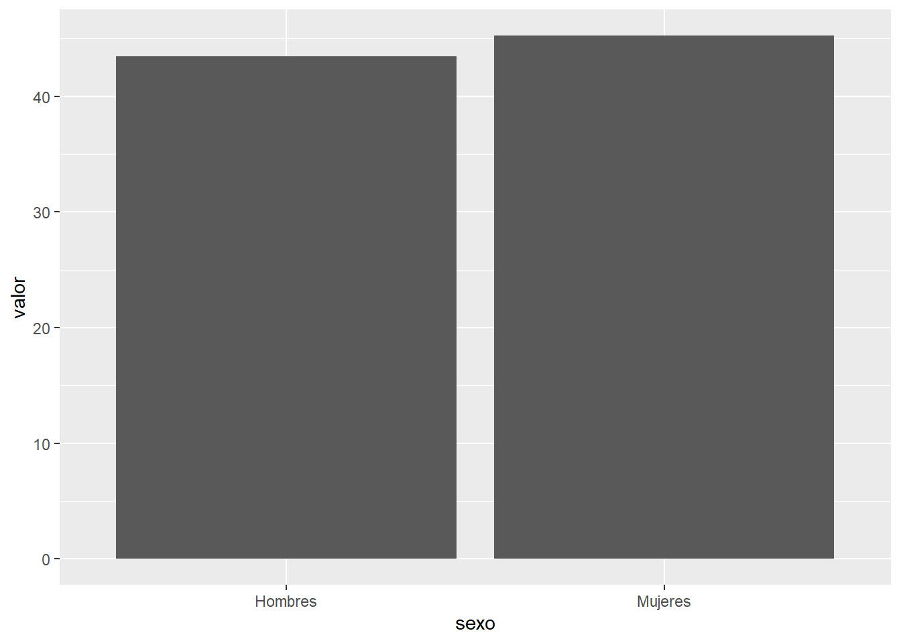
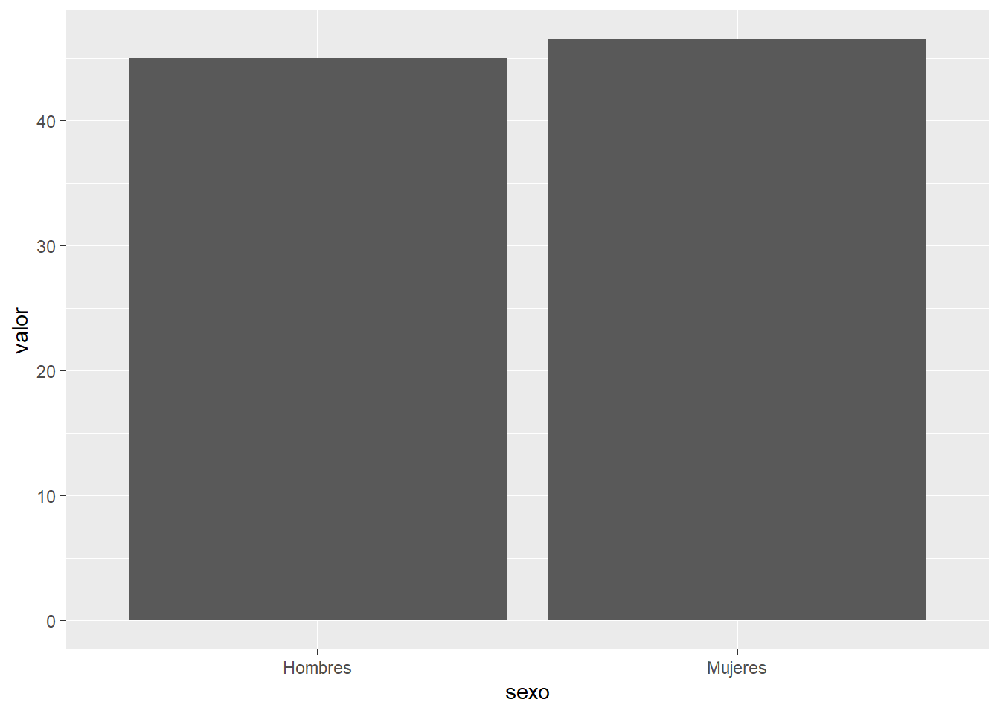
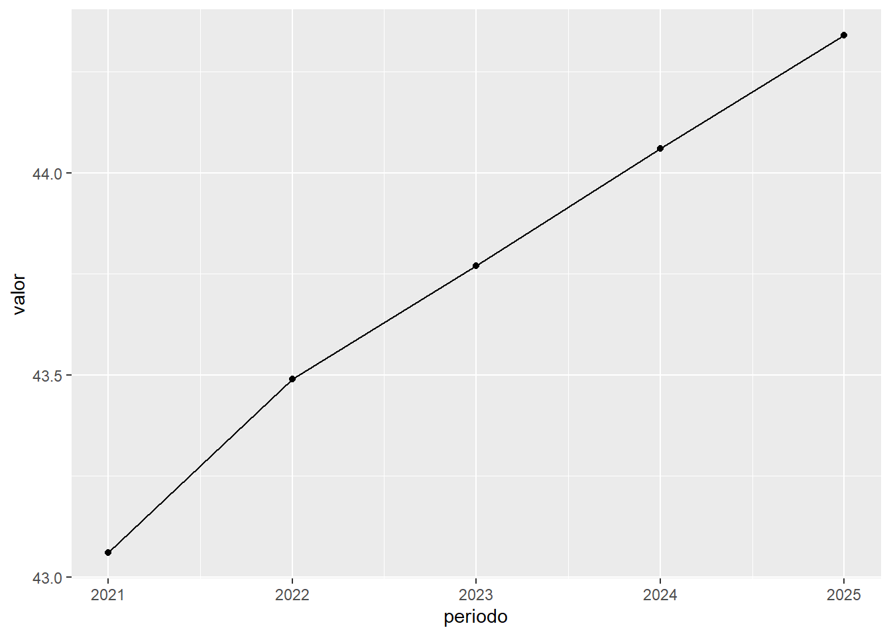
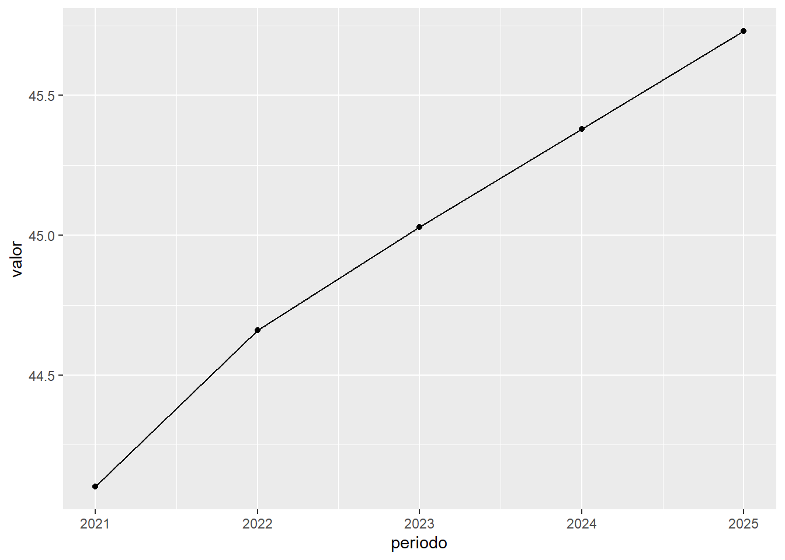
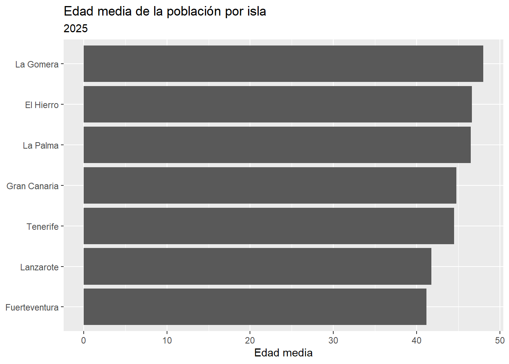
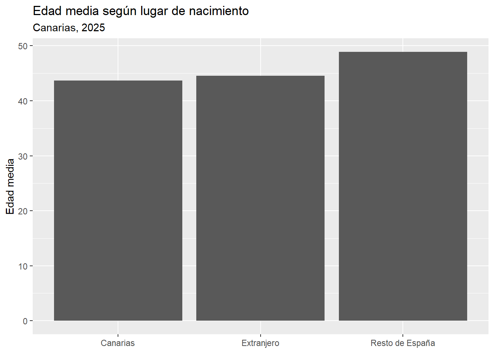
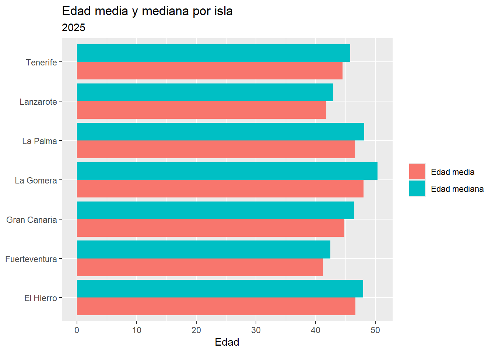
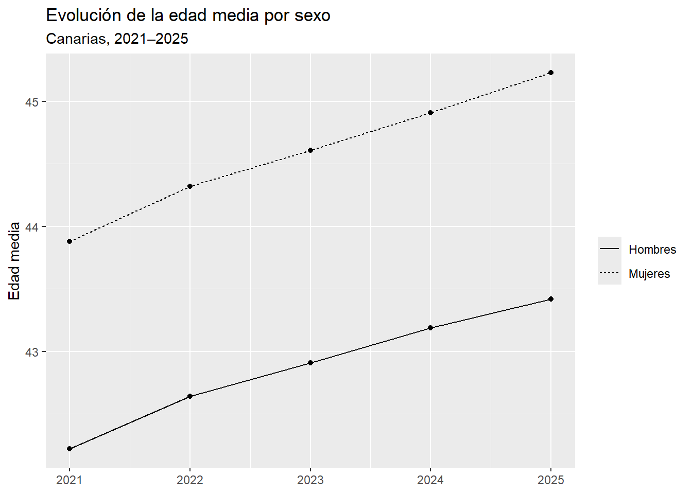
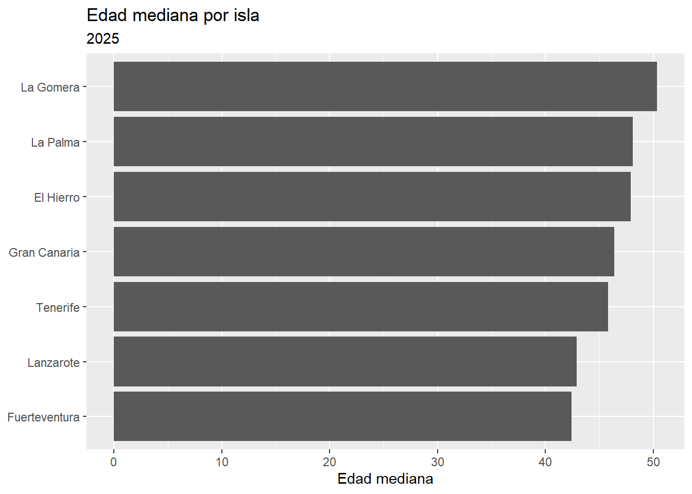

personas <- data.frame(
nombre = c("Ana", "Luis", "Marta", "Pedro"),
edad = c(28, 42, 35, 51)
)
personas nombre edad
1 Ana 28
2 Luis 42
3 Marta 35
4 Pedro 51De los datos al análisis
Al terminar este taller no vas a saber todo R. Tampoco hace falta.
El objetivo es mucho más concreto:
Entender cómo funciona R y ser capaz de empezar a trabajar con datos.
Durante las próximas 2 horas y 30 minutos vamos a recorrer un análisis completo:
Pregunta → Datos → Explorar → Transformar → Visualizar → InterpretarNo vamos a aprender funciones de memoria. Vamos a utilizarlas cuando aparezca una pregunta que las necesite.
No necesitas memorizar R para empezar.
Necesitas entender cómo pensar un problema con datos y saber dónde buscar cuando necesites una herramienta.
R es un lenguaje de programación y un entorno para trabajar con datos.
RStudio es un entorno de desarrollo —un IDE— que nos facilita trabajar con R.
Una forma sencilla de recordarlo:
R es el motor. RStudio es el salpicadero.
En RStudio encontraremos, entre otras cosas:
Cuando instalamos R, el lenguaje ya incorpora muchas funciones.
A ese conjunto de herramientas solemos referirnos como R base.
Con R base podemos, por ejemplo:
Pero R también puede ampliarse.
La comunidad de R desarrolla paquetes que incorporan nuevas funciones y nuevas formas de resolver problemas.
En este taller utilizaremos principalmente paquetes del ecosistema tidyverse.
Algunos de ellos serán:
| Paquete | ¿Para qué lo usaremos? |
|---|---|
readr |
importar datos |
dplyr |
transformar datos |
ggplot2 |
visualizar datos |
dplyr no es otro lenguaje distinto de R.
Cuando usamos filter(), seguimos programando en R. Simplemente estamos utilizando una función que aporta el paquete dplyr.
Lo mismo ocurre con ggplot(): seguimos utilizando R, pero a través del paquete ggplot2.
Vamos a construir una tabla diminuta, solo para ver la diferencia.
personas <- data.frame(
nombre = c("Ana", "Luis", "Marta", "Pedro"),
edad = c(28, 42, 35, 51)
)
personas nombre edad
1 Ana 28
2 Luis 42
3 Marta 35
4 Pedro 51Queremos responder:
¿Qué personas tienen más de 30 años?
Con R base podemos escribir:
personas[personas$edad > 30, ] nombre edad
2 Luis 42
3 Marta 35
4 Pedro 51Ahora cargamos dplyr:
library(dplyr)Y podemos expresar la misma operación así:
personas |>
filter(edad > 30) nombre edad
1 Luis 42
2 Marta 35
3 Pedro 51Las dos soluciones están escritas en R.
La segunda utiliza una función proporcionada por dplyr.
Porque para trabajar con datos ofrece una sintaxis bastante legible y coherente.
Por ejemplo:
toma estos datos
↓
filtra estas observaciones
↓
ordena el resultado
↓
haz un gráficose parece mucho a la forma en que vamos a escribir nuestros análisis.
Un paquete normalmente se instala una vez en el ordenador:
install.packages("tidyverse")Pero tenemos que cargarlo en cada nueva sesión en la que queramos utilizarlo:
library(tidyverse)No es necesario ejecutar install.packages() cada vez que abres RStudio.
install.packages() → instala el paquete en el ordenador.library() → lo deja disponible en la sesión actual.Para trabajar de forma ordenada vamos a utilizar un proyecto.
Nuestro proyecto tendrá una estructura parecida a esta:
primeros-pasos-r/
├── primeros-pasos-r.qmd
└── datos/
└── dataset-ISTAC-E30243A_000014.tsvLa ventaja es sencilla: todo lo necesario para reproducir el análisis está dentro de una misma carpeta.
.qmd?Este documento es un archivo Quarto.
Aquí podemos combinar:
Así, el análisis y su explicación viven juntos.
Un buen análisis no es solo obtener un resultado.
También deberíamos poder explicar cómo hemos llegado a él y volver a ejecutar el proceso más adelante.
En R podemos guardar información en un objeto.
mensaje <- "Hola, R"
mensaje[1] "Hola, R"El operador:
<-se puede leer como:
guarda lo que está a la derecha con el nombre que está a la izquierda.
Por ejemplo:
edad <- 35
edad[1] 35Los objetos pueden contener muchas cosas:
Una función recibe instrucciones entre paréntesis.
Por ejemplo:
mean(c(4, 7, 9, 10))[1] 7.5Podemos leerlo como:
calcula la media de estos valores.
La estructura general será:
funcion(argumentos)No necesitamos memorizar todas las funciones de R.
Necesitamos aprender a:
Podemos crear un vector con c():
islas_ejemplo <- c(
"Tenerife",
"Gran Canaria",
"Lanzarote"
)
islas_ejemplo[1] "Tenerife" "Gran Canaria" "Lanzarote" Dentro de poco necesitaremos exactamente esta idea para trabajar con varias islas a la vez.
El operador:
|>se llama pipe.
Podemos leer:
datos |>
funcion()como:
toma
datosy después aplicafuncion().
Lo utilizaremos mucho porque nuestros análisis serán secuencias de pasos.
Si no recuerdas cómo funciona una función:
?meano:
help(mean)No saber de memoria una función no significa no saber R.
Programar también consiste en consultar documentación, probar y comprobar.
Crea un objeto llamado edades que contenga:
28, 42, 35, 51y calcula su media.
edades <- c(28, 42, 35, 51)
mean(edades)[1] 39A partir de ahora vamos a trabajar con datos reales publicados por el Instituto Canario de Estadística (ISTAC).
El conjunto de datos contiene información sobre:
Edad media y edad mediana según sexo y lugar de nacimiento en relación con la residencia, para Canarias, islas y municipios.
Tenemos información anual de 2021 a 2025.
La fuente de datos es el INE y la publicación corresponde al ISTAC.
El fichero está guardado dentro de nuestra carpeta datos/.
Como es un fichero TSV —columnas separadas mediante tabuladores— utilizaremos read_tsv().
edad_canarias <- read_tsv(
"datos/dataset-ISTAC-E30243A_000014.tsv"
)Acabamos de hacer algo importante:
fichero TSV
↓
read_tsv()
↓
objeto de R
↓
edad_canariasPodemos mirar directamente el objeto:
edad_canarias# A tibble: 20,160 × 9
TERRITORIO TIME_PERIOD SEXO LUGAR_NACIMIENTO MEDIDAS OBS_VALUE
<chr> <dbl> <chr> <chr> <chr> <dbl>
1 Canarias 2025 Total Total Edad media 44.3
2 Canarias 2025 Total Total Edad mediana 45.7
3 Canarias 2025 Hombres Total Edad media 43.4
4 Canarias 2025 Hombres Total Edad mediana 45.0
5 Canarias 2025 Mujeres Total Edad media 45.2
6 Canarias 2025 Mujeres Total Edad mediana 46.5
7 Canarias 2024 Total Total Edad media 44.1
8 Canarias 2024 Total Total Edad mediana 45.4
9 Canarias 2024 Hombres Total Edad media 43.2
10 Canarias 2024 Hombres Total Edad mediana 44.7
# ℹ 20,150 more rows
# ℹ 3 more variables: ESTADO_OBSERVACION <lgl>,
# CONFIDENCIALIDAD_OBSERVACION <lgl>, NOTAS_OBSERVACION <lgl>Y obtener una descripción más compacta:
glimpse(edad_canarias)Rows: 20,160
Columns: 9
$ TERRITORIO <chr> "Canarias", "Canarias", "Canarias", "Cana…
$ TIME_PERIOD <dbl> 2025, 2025, 2025, 2025, 2025, 2025, 2024,…
$ SEXO <chr> "Total", "Total", "Hombres", "Hombres", "…
$ LUGAR_NACIMIENTO <chr> "Total", "Total", "Total", "Total", "Tota…
$ MEDIDAS <chr> "Edad media", "Edad mediana", "Edad media…
$ OBS_VALUE <dbl> 44.34, 45.73, 43.42, 44.99, 45.23, 46.47,…
$ ESTADO_OBSERVACION <lgl> NA, NA, NA, NA, NA, NA, NA, NA, NA, NA, N…
$ CONFIDENCIALIDAD_OBSERVACION <lgl> NA, NA, NA, NA, NA, NA, NA, NA, NA, NA, N…
$ NOTAS_OBSERVACION <lgl> NA, NA, NA, NA, NA, NA, NA, NA, NA, NA, N…También podemos ver sus nombres:
names(edad_canarias)[1] "TERRITORIO" "TIME_PERIOD"
[3] "SEXO" "LUGAR_NACIMIENTO"
[5] "MEDIDAS" "OBS_VALUE"
[7] "ESTADO_OBSERVACION" "CONFIDENCIALIDAD_OBSERVACION"
[9] "NOTAS_OBSERVACION" Tenemos 20.160 observaciones y 9 variables.
Las variables que necesitaremos para el análisis son:
TERRITORIO
TIME_PERIOD
SEXO
LUGAR_NACIMIENTO
MEDIDAS
OBS_VALUELas tres últimas columnas contienen atributos de observación que, en este fichero, están vacíos:
ESTADO_OBSERVACION
CONFIDENCIALIDAD_OBSERVACION
NOTAS_OBSERVACIONNuestra primera transformación responde a una necesidad real:
Para este análisis no necesitamos todas las columnas.
edad_canarias <- edad_canarias |>
select(
TERRITORIO,
TIME_PERIOD,
SEXO,
LUGAR_NACIMIENTO,
MEDIDAS,
OBS_VALUE
)Ahora vamos a usar nombres algo más cómodos durante el taller:
edad_canarias <- edad_canarias |>
rename(
territorio = TERRITORIO,
periodo = TIME_PERIOD,
sexo = SEXO,
lugar_nacimiento = LUGAR_NACIMIENTO,
medida = MEDIDAS,
valor = OBS_VALUE
)Volvemos a mirar:
glimpse(edad_canarias)Rows: 20,160
Columns: 6
$ territorio <chr> "Canarias", "Canarias", "Canarias", "Canarias", "Cana…
$ periodo <dbl> 2025, 2025, 2025, 2025, 2025, 2025, 2024, 2024, 2024,…
$ sexo <chr> "Total", "Total", "Hombres", "Hombres", "Mujeres", "M…
$ lugar_nacimiento <chr> "Total", "Total", "Total", "Total", "Total", "Total",…
$ medida <chr> "Edad media", "Edad mediana", "Edad media", "Edad med…
$ valor <dbl> 44.34, 45.73, 43.42, 44.99, 45.23, 46.47, 44.06, 45.3…Antes de analizar conviene entender el contenido.
edad_canarias |>
distinct(periodo)# A tibble: 5 × 1
periodo
<dbl>
1 2025
2 2024
3 2023
4 2022
5 2021edad_canarias |>
distinct(sexo)# A tibble: 3 × 1
sexo
<chr>
1 Total
2 Hombres
3 Mujeresedad_canarias |>
distinct(lugar_nacimiento)# A tibble: 7 × 1
lugar_nacimiento
<chr>
1 Total
2 Canarias
3 Mismo municipio
4 Otro municipio de la isla
5 Otra isla
6 Resto de España
7 Extranjero edad_canarias |>
distinct(medida)# A tibble: 2 × 1
medida
<chr>
1 Edad media
2 Edad medianaCada observación queda identificada por:
Territorio
×
Periodo
×
Sexo
×
Lugar de nacimiento
×
Medida
↓
ValorPor ejemplo, una fila puede significar:
Edad media de las mujeres residentes en Canarias en 2025, considerando el total de lugares de nacimiento.
Una fila no representa simplemente “Canarias”.
Representa una combinación concreta de todas las dimensiones.
El fichero local será nuestro camino principal durante el taller porque funciona aunque falle la conexión a Internet.
Pero los mismos datos también pueden consultarse directamente desde la API estadística del ISTAC mediante el paquete istacr.
library(istacr)
edad_api <- get_statisticalresources_datasets_agency_resource_version(
agencyid = "ISTAC",
resourceid = "E30243A_000014",
version = "~latest"
)$dataframeNo necesitamos aprender hoy cómo funciona internamente una API.
Quédate con esta idea:
fichero local → R lee un archivo guardado
API → R solicita los datos directamente al proveedorTrabajaremos con el fichero local para garantizar que todos podamos avanzar juntos.
La consulta mediante API queda como ejemplo de cómo automatizar posteriormente el acceso a los datos.
Tenemos nuestra primera pregunta real:
¿Cuál es la edad media de la población de Canarias en 2025?
Podemos empezar por algo aparentemente evidente.
edad_canarias |>
filter(territorio == "Canarias")# A tibble: 210 × 6
territorio periodo sexo lugar_nacimiento medida valor
<chr> <dbl> <chr> <chr> <chr> <dbl>
1 Canarias 2025 Total Total Edad media 44.3
2 Canarias 2025 Total Total Edad mediana 45.7
3 Canarias 2025 Hombres Total Edad media 43.4
4 Canarias 2025 Hombres Total Edad mediana 45.0
5 Canarias 2025 Mujeres Total Edad media 45.2
6 Canarias 2025 Mujeres Total Edad mediana 46.5
7 Canarias 2024 Total Total Edad media 44.1
8 Canarias 2024 Total Total Edad mediana 45.4
9 Canarias 2024 Hombres Total Edad media 43.2
10 Canarias 2024 Hombres Total Edad mediana 44.7
# ℹ 200 more rowsPero obtenemos muchas filas.
¿Cuántas?
edad_canarias |>
filter(territorio == "Canarias") |>
nrow()[1] 210El resultado es 210.
Porque todavía dejamos variar:
5 periodos
×
3 categorías de sexo
×
7 categorías de lugar de nacimiento
×
2 medidas
= 210 observacionesNuestra pregunta contiene más información de la que parecía.
Queremos:
territorio = Canarias
periodo = 2025
sexo = Total
lugar de nacimiento = Total
medida = Edad mediaAhora sí:
edad_canarias |>
filter(
territorio == "Canarias",
periodo == 2025,
sexo == "Total",
lugar_nacimiento == "Total",
medida == "Edad media"
)# A tibble: 1 × 6
territorio periodo sexo lugar_nacimiento medida valor
<chr> <dbl> <chr> <chr> <chr> <dbl>
1 Canarias 2025 Total Total Edad media 44.3El resultado es:
44,34 años
filter()Lo importante es lo que acabamos de hacer:
pregunta
↓
identificar las dimensiones
↓
traducirlas a condiciones
↓
localizar la observaciónBusca la edad mediana de Canarias en 2025 para el total de la población.
edad_canarias |>
filter(
territorio == "Canarias",
periodo == 2025,
sexo == "Total",
lugar_nacimiento == "Total",
medida == "Edad mediana"
)# A tibble: 1 × 6
territorio periodo sexo lugar_nacimiento medida valor
<chr> <dbl> <chr> <chr> <chr> <dbl>
1 Canarias 2025 Total Total Edad mediana 45.7Resultado esperado: 45,73 años.
filter() selecciona filas que cumplen determinadas condiciones.
datos |>
filter(variable == valor)Hasta ahora hemos fijado:
sexo = TotalPero ahora queremos que el sexo varíe.
La pregunta es:
¿La edad media en Canarias en 2025 es igual para hombres y mujeres?
edad_sexo <- edad_canarias |>
filter(
territorio == "Canarias",
periodo == 2025,
sexo != "Total",
lugar_nacimiento == "Total",
medida == "Edad media"
)
edad_sexo# A tibble: 2 × 6
territorio periodo sexo lugar_nacimiento medida valor
<chr> <dbl> <chr> <chr> <chr> <dbl>
1 Canarias 2025 Hombres Total Edad media 43.4
2 Canarias 2025 Mujeres Total Edad media 45.2Obtenemos:
Hombres → 43,42 años
Mujeres → 45,23 añosPodemos representar esos datos mediante barras:
ggplot(
edad_sexo,
aes(
x = sexo,
y = valor
)
) +
geom_col()
ggplot2?edad_sexo
↓
estos son los datos
x = sexo
↓
quiero comparar categorías
y = valor
↓
esta es la magnitud numérica
geom_col()
↓
quiero representarla con barrasA partir de estos datos podemos decir:
En Canarias, en 2025, la edad media de las mujeres es superior a la de los hombres.
Pero los datos no permiten afirmar directamente:
Las mujeres viven más porque su edad media es mayor.
Eso necesitaría otra pregunta, otros datos y otro análisis.
Descripción: qué muestran los datos.
Interpretación: qué patrón observamos y cómo podemos contextualizarlo.
Causalidad: por qué ocurre.
No debemos saltar automáticamente del primero al tercero.
Modifica el código para comparar hombres y mujeres utilizando edad mediana.
edad_canarias |>
filter(
territorio == "Canarias",
periodo == 2025,
sexo != "Total",
lugar_nacimiento == "Total",
medida == "Edad mediana"
) |>
ggplot(
aes(
x = sexo,
y = valor
)
) +
geom_col()
Ahora queremos estudiar una dimensión diferente:
¿Cómo ha evolucionado la edad media de Canarias entre 2021 y 2025?
Antes fijábamos:
periodo = 2025Ahora queremos dejar que periodo varíe.
evolucion_canarias <- edad_canarias |>
filter(
territorio == "Canarias",
sexo == "Total",
lugar_nacimiento == "Total",
medida == "Edad media"
)
evolucion_canarias# A tibble: 5 × 6
territorio periodo sexo lugar_nacimiento medida valor
<chr> <dbl> <chr> <chr> <chr> <dbl>
1 Canarias 2025 Total Total Edad media 44.3
2 Canarias 2024 Total Total Edad media 44.1
3 Canarias 2023 Total Total Edad media 43.8
4 Canarias 2022 Total Total Edad media 43.5
5 Canarias 2021 Total Total Edad media 43.1Podemos ordenar cronológicamente:
evolucion_canarias |>
arrange(periodo)# A tibble: 5 × 6
territorio periodo sexo lugar_nacimiento medida valor
<chr> <dbl> <chr> <chr> <chr> <dbl>
1 Canarias 2021 Total Total Edad media 43.1
2 Canarias 2022 Total Total Edad media 43.5
3 Canarias 2023 Total Total Edad media 43.8
4 Canarias 2024 Total Total Edad media 44.1
5 Canarias 2025 Total Total Edad media 44.3Y ahora utilizar una línea:
ggplot(
evolucion_canarias,
aes(
x = periodo,
y = valor
)
) +
geom_line() +
geom_point()
Los valores pasan de 43,06 años en 2021 a 44,34 años en 2025.
Antes queríamos comparar categorías:
sexo → barrasAhora queremos observar una evolución:
tiempo → líneaNo estamos memorizando gráficos.
Estamos eligiendo una representación en función de la pregunta.
Representa la evolución de la edad mediana de Canarias.
edad_canarias |>
filter(
territorio == "Canarias",
sexo == "Total",
lugar_nacimiento == "Total",
medida == "Edad mediana"
) |>
ggplot(
aes(
x = periodo,
y = valor
)
) +
geom_line() +
geom_point()
arrange() ordena filas.
datos |>
arrange(variable)Y podemos invertir el orden con:
datos |>
arrange(desc(variable))Ahora cambiamos de escala territorial:
¿Todas las islas tienen la misma edad media en 2025?
Nuestro fichero contiene Canarias, islas y municipios, pero no tiene una columna que identifique directamente el nivel territorial.
Por eso vamos a definir qué territorios queremos estudiar.
islas <- c(
"El Hierro",
"Fuerteventura",
"Gran Canaria",
"La Gomera",
"La Palma",
"Lanzarote",
"Tenerife"
)Acabamos de utilizar un vector para resolver un problema real.
Ahora filtramos:
edad_islas <- edad_canarias |>
filter(
territorio %in% islas,
periodo == 2025,
sexo == "Total",
lugar_nacimiento == "Total",
medida == "Edad media"
)
edad_islas# A tibble: 7 × 6
territorio periodo sexo lugar_nacimiento medida valor
<chr> <dbl> <chr> <chr> <chr> <dbl>
1 Lanzarote 2025 Total Total Edad media 41.8
2 Fuerteventura 2025 Total Total Edad media 41.2
3 Gran Canaria 2025 Total Total Edad media 44.8
4 Tenerife 2025 Total Total Edad media 44.5
5 La Gomera 2025 Total Total Edad media 48.0
6 La Palma 2025 Total Total Edad media 46.5
7 El Hierro 2025 Total Total Edad media 46.7El operador %in% se puede leer como:
¿Este valor está dentro de este conjunto de valores?
edad_islas |>
arrange(desc(valor))# A tibble: 7 × 6
territorio periodo sexo lugar_nacimiento medida valor
<chr> <dbl> <chr> <chr> <chr> <dbl>
1 La Gomera 2025 Total Total Edad media 48.0
2 El Hierro 2025 Total Total Edad media 46.7
3 La Palma 2025 Total Total Edad media 46.5
4 Gran Canaria 2025 Total Total Edad media 44.8
5 Tenerife 2025 Total Total Edad media 44.5
6 Lanzarote 2025 Total Total Edad media 41.8
7 Fuerteventura 2025 Total Total Edad media 41.2En 2025:
La Gomera → 48,02
El Hierro → 46,66
La Palma → 46,50
Gran Canaria → 44,78
Tenerife → 44,49
Lanzarote → 41,79
Fuerteventura → 41,19ggplot(
edad_islas,
aes(
x = reorder(territorio, valor),
y = valor
)
) +
geom_col() +
coord_flip() +
labs(
x = NULL,
y = "Edad media",
title = "Edad media de la población por isla",
subtitle = "2025"
)
Aquí hemos añadido algunos detalles para mejorar la lectura del gráfico.
No necesitas memorizar reorder(), coord_flip() o labs() hoy.
Lo importante sigue siendo:
datos
↓
variable que comparamos
↓
valor numérico
↓
representación¿Cuál es la isla con menor edad media en 2025?
Intenta responder primero con una tabla ordenada.
edad_islas |>
arrange(valor)# A tibble: 7 × 6
territorio periodo sexo lugar_nacimiento medida valor
<chr> <dbl> <chr> <chr> <chr> <dbl>
1 Fuerteventura 2025 Total Total Edad media 41.2
2 Lanzarote 2025 Total Total Edad media 41.8
3 Tenerife 2025 Total Total Edad media 44.5
4 Gran Canaria 2025 Total Total Edad media 44.8
5 La Palma 2025 Total Total Edad media 46.5
6 El Hierro 2025 Total Total Edad media 46.7
7 La Gomera 2025 Total Total Edad media 48.0La menor edad media corresponde a Fuerteventura: 41,19 años.
Nuestro conjunto de datos todavía contiene una dimensión que apenas hemos utilizado:
lugar_nacimientoVamos a comparar tres categorías conceptualmente sencillas:
c(
"Canarias",
"Resto de España",
"Extranjero"
)La pregunta es:
¿La edad media de la población residente en Canarias difiere según el lugar de nacimiento?
origen <- c(
"Canarias",
"Resto de España",
"Extranjero"
)edad_origen <- edad_canarias |>
filter(
territorio == "Canarias",
periodo == 2025,
sexo == "Total",
lugar_nacimiento %in% origen,
medida == "Edad media"
)
edad_origen# A tibble: 3 × 6
territorio periodo sexo lugar_nacimiento medida valor
<chr> <dbl> <chr> <chr> <chr> <dbl>
1 Canarias 2025 Total Canarias Edad media 43.7
2 Canarias 2025 Total Resto de España Edad media 48.9
3 Canarias 2025 Total Extranjero Edad media 44.5Los resultados son:
Canarias → 43,71
Resto de España → 48,90
Extranjero → 44,54Podemos representarlos:
ggplot(
edad_origen,
aes(
x = lugar_nacimiento,
y = valor
)
) +
geom_col() +
labs(
x = NULL,
y = "Edad media",
title = "Edad media según lugar de nacimiento",
subtitle = "Canarias, 2025"
)
¿Cuál de estas dos frases está mejor respaldada por los datos?
La primera.
Estamos describiendo una asociación observada. No hemos realizado un análisis causal.
Hasta ahora hemos trabajado principalmente con edad media.
Pero el dataset contiene otra medida.
edad_canarias |>
distinct(medida)# A tibble: 2 × 1
medida
<chr>
1 Edad media
2 Edad medianaTenemos:
Edad media
Edad medianaDe forma muy simplificada:
La pregunta es:
¿La comparación entre islas cambia si miramos la mediana en lugar de la media?
edad_islas_medidas <- edad_canarias |>
filter(
territorio %in% islas,
periodo == 2025,
sexo == "Total",
lugar_nacimiento == "Total"
)
edad_islas_medidas# A tibble: 14 × 6
territorio periodo sexo lugar_nacimiento medida valor
<chr> <dbl> <chr> <chr> <chr> <dbl>
1 Lanzarote 2025 Total Total Edad media 41.8
2 Lanzarote 2025 Total Total Edad mediana 42.9
3 Fuerteventura 2025 Total Total Edad media 41.2
4 Fuerteventura 2025 Total Total Edad mediana 42.4
5 Gran Canaria 2025 Total Total Edad media 44.8
6 Gran Canaria 2025 Total Total Edad mediana 46.4
7 Tenerife 2025 Total Total Edad media 44.5
8 Tenerife 2025 Total Total Edad mediana 45.8
9 La Gomera 2025 Total Total Edad media 48.0
10 La Gomera 2025 Total Total Edad mediana 50.3
11 La Palma 2025 Total Total Edad media 46.5
12 La Palma 2025 Total Total Edad mediana 48.1
13 El Hierro 2025 Total Total Edad media 46.7
14 El Hierro 2025 Total Total Edad mediana 47.9Ahora tenemos dos valores por isla.
Podemos añadir una tercera variable al gráfico mediante fill:
ggplot(
edad_islas_medidas,
aes(
x = territorio,
y = valor,
fill = medida
)
) +
geom_col(position = "dodge") +
coord_flip() +
labs(
x = NULL,
y = "Edad",
fill = NULL,
title = "Edad media y mediana por isla",
subtitle = "2025"
)
Al principio del taller buscábamos un número.
Ahora somos capaces de:
Eso ya es un pequeño análisis de datos.
No calcularemos una “media de las edades medias” de las islas para obtener Canarias.
Los valores del dataset ya son estadísticas agregadas de poblaciones concretas. Promediarlas sin ponderar no reproduce necesariamente la estadística del territorio superior.
Ahora toca recorrer el proceso completo.
Pregunta
↓
Datos
↓
Selección
↓
Visualización
↓
InterpretaciónElige una de estas preguntas.
¿Cómo ha evolucionado la edad media de hombres y mujeres en Canarias entre 2021 y 2025?
¿Qué diferencias existen entre las islas en la edad mediana de 2025?
¿Cómo difiere la edad media en Canarias entre personas nacidas en Canarias, en el resto de España y en el extranjero?
Completa estas preguntas antes de escribir código:
edad_canarias |>
filter(
territorio == "...",
sexo != "...",
lugar_nacimiento == "...",
medida == "..."
)edad_canarias |>
filter(
territorio %in% islas,
periodo == ...,
sexo == "...",
lugar_nacimiento == "...",
medida == "..."
)edad_canarias |>
filter(
territorio == "...",
periodo == ...,
sexo == "...",
lugar_nacimiento %in% origen,
medida == "..."
)sexo_evolucion <- edad_canarias |>
filter(
territorio == "Canarias",
sexo != "Total",
lugar_nacimiento == "Total",
medida == "Edad media"
)
ggplot(
sexo_evolucion,
aes(
x = periodo,
y = valor,
group = sexo,
linetype = sexo
)
) +
geom_line() +
geom_point() +
labs(
x = NULL,
y = "Edad media",
linetype = NULL,
title = "Evolución de la edad media por sexo",
subtitle = "Canarias, 2021–2025"
)
Una descripción válida sería:
La edad media aumenta entre 2021 y 2025 tanto entre los hombres como entre las mujeres, manteniéndose durante todo el periodo una edad media mayor entre las mujeres.
edad_canarias |>
filter(
territorio %in% islas,
periodo == 2025,
sexo == "Total",
lugar_nacimiento == "Total",
medida == "Edad mediana"
) |>
ggplot(
aes(
x = reorder(territorio, valor),
y = valor
)
) +
geom_col() +
coord_flip() +
labs(
x = NULL,
y = "Edad mediana",
title = "Edad mediana por isla",
subtitle = "2025"
)
edad_canarias |>
filter(
territorio == "Canarias",
periodo == 2025,
sexo == "Total",
lugar_nacimiento %in% origen,
medida == "Edad media"
) |>
ggplot(
aes(
x = lugar_nacimiento,
y = valor
)
) +
geom_col() +
labs(
x = NULL,
y = "Edad media",
title = "Edad media según lugar de nacimiento",
subtitle = "Canarias, 2025"
)
Hace dos horas y media, nuestro punto de partida era:
un fichero de datosAhora sabemos recorrer:
Pregunta
↓
Importar
↓
Explorar
↓
Seleccionar
↓
Filtrar
↓
Ordenar
↓
Visualizar
↓
InterpretarY hemos utilizado herramientas como:
read_tsv()
glimpse()
distinct()
select()
rename()
filter()
arrange()
ggplot()
geom_col()
geom_line()
geom_point()Pero esa lista no es lo más importante.
Lo importante es que ya sabemos para qué las necesitamos.
R es muchísimo más amplio.
Hoy no necesitábamos entrar en:
Eso vendrá cuando una pregunta lo requiera.
Un buen siguiente paso es repetir este mismo esquema con otro conjunto de datos:
1. formula una pregunta;
2. comprende la estructura de los datos;
3. selecciona lo necesario;
4. transforma solo lo que haga falta;
5. visualiza;
6. interpreta;
7. documenta lo que has hecho.No necesitas saber R para empezar a trabajar con datos.
Necesitas empezar a trabajar con datos para aprender R.
Si aparece algo como:
could not find function "filter"comprueba que has cargado el paquete correspondiente:
library(tidyverse)Si R dice:
object 'edad_canarias' not foundprobablemente no has ejecutado todavía el código que crea ese objeto.
Recuerda que Quarto contiene el código, pero R solo conoce aquello que se ha ejecutado en la sesión actual.
Si:
read_tsv("datos/...")no encuentra el archivo, comprueba que:
datos;== no es <-Son cosas distintas:
edad <- 35guarda un valor.
edad == 35pregunta si ambos valores son iguales.
Canariasno es lo mismo que:
canariasLo mismo ocurre con los nombres de los objetos.
Compara la evolución de la edad media de Tenerife y Gran Canaria entre 2021 y 2025.
Busca qué isla presenta en 2025 la mayor diferencia entre edad media y edad mediana.
Repite una de las preguntas del taller para un municipio que conozcas.
Busca en la ayuda de ggplot2 cómo añadir un título y etiquetas a los ejes sin mirar las soluciones del taller.
datos <- read_tsv("ruta/al/fichero.tsv")datos
glimpse(datos)
names(datos)datos |>
distinct(variable)datos |>
select(variable1, variable2)datos |>
rename(nuevo_nombre = nombre_anterior)datos |>
filter(variable == "valor")datos |>
filter(variable %in% c("A", "B"))datos |>
arrange(variable)datos |>
arrange(desc(variable))ggplot(datos, aes(x = categoria, y = valor)) +
geom_col()ggplot(datos, aes(x = tiempo, y = valor)) +
geom_line() +
geom_point()